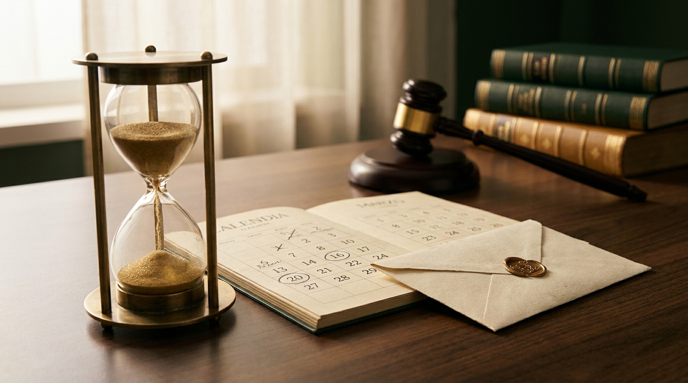

Licenziamento durante la malattia e periodo di comporto: cosa dice la Cassazione
Il datore di lavoro può licenziare un dipendente assente per malattia prima che si esaurisca il periodo di comporto? Le Sezioni Unite della Cassazione hanno fissato un principio chiaro: il recesso intimato prima del superamento di quel limite è temporaneamente inefficace. Vediamo cosa significa, perché conta e come muoversi su entrambi i fronti del rapporto.

Il principio fissato dalle Sezioni Unite
La questione è stata risolta dalle Sezioni Unite della Corte di Cassazione con la sentenza 22 maggio 2018, n. 12568. Il punto giuridico è delicato: cosa accade se il datore di lavoro intima il licenziamento per superamento del comporto prima che il comporto sia effettivamente superato?
Le Sezioni Unite hanno chiarito che, in questo caso, il licenziamento non è nullo per violazione di norma imperativa, ma temporaneamente inefficace. In altre parole, il recesso resta sospeso e non produce effetti fino al momento in cui il periodo di comporto risulti effettivamente superato. Solo da quel momento, se ricorrono le condizioni, può acquistare efficacia.
Cos'è il periodo di comporto
Il periodo di comporto è l'arco di tempo durante il quale il lavoratore assente per malattia conserva il diritto al posto. Il fondamento è l'art. 2110, comma 2, del codice civile: il datore può recedere solo decorso il termine stabilito dalla legge, dagli usi o secondo equità. In concreto, la durata è quasi sempre fissata dai contratti collettivi (CCNL).
Il comporto può essere di due tipi. Il comporto secco riguarda un unico episodio morboso continuativo e fissa un numero massimo di giorni consecutivi di assenza. Il comporto per sommatoria (o frazionato) somma invece più episodi di malattia entro un periodo di osservazione definito dal CCNL. La distinzione è cruciale: il calcolo dei giorni rilevanti cambia a seconda della disciplina contrattuale applicabile, e gli errori di conteggio da parte del datore sono frequenti.
Cosa cambia in concreto
La qualificazione come inefficacia, anziché come nullità, ha conseguenze pratiche rilevanti.
Per il datore di lavoro: anticipare il licenziamento rispetto al reale superamento del comporto è inutile e rischioso. Il recesso non produce effetto e l'errore di calcolo espone l'azienda a contenzioso. Occorre quindi verificare con precisione il computo dei giorni secondo il CCNL prima di procedere.
Per il lavoratore: l'assenza ancora coperta dal comporto rende il licenziamento inefficace. Il dipendente conserva la propria posizione e può reagire impugnando l'atto.
Il regime di tutela in caso di illegittimità non è uniforme. Dipende dalla data di assunzione: per i rapporti instaurati prima del 7 marzo 2015 si applica l'art. 18 della legge 300/1970 (Statuto dei lavoratori); per quelli successivi opera il d.lgs. 23/2015 (cosiddetto Jobs Act). Le conseguenze, in termini di reintegra o di indennità risarcitoria, vanno valutate caso per caso anche in relazione alle soglie dimensionali dell'impresa. Non esiste, quindi, una conseguenza automatica e identica per tutti.
I termini di impugnazione
Il licenziamento va impugnato nei termini di decadenza previsti dall'art. 6 della legge 604/1966: l'impugnazione stragiudiziale entro 60 giorni dalla comunicazione del recesso, seguita dal deposito del ricorso giudiziale (o dalla comunicazione della richiesta di conciliazione/arbitrato) entro i successivi 180 giorni. La concreta applicazione di questi termini al licenziamento ante comporto è materia tecnica e dibattuta: è prudente rispettare comunque i termini ordinari per non incorrere in decadenze.
Cosa fare in concreto
- Lato datore: prima di intimare il recesso, verificate il calcolo esatto dei giorni di comporto secondo il CCNL applicabile, distinguendo comporto secco e per sommatoria.
- Lato datore: non anticipate il licenziamento rispetto al reale superamento del limite; un recesso prematuro è privo di effetto.
- Lato lavoratore: conservate ogni documentazione sulle assenze (certificati, comunicazioni) per ricostruire il conteggio in caso di contestazione.
- Lato lavoratore: impugnate il licenziamento entro 60 giorni dalla ricezione, senza attendere chiarimenti informali.
- Entrambi: verificate il regime di tutela applicabile in base alla data di assunzione e alle dimensioni aziendali prima di valutare strategie difensive o transattive.
Disclaimer
Contributo informativo a cura di Tamburro & Partners Avvocati. Non costituisce parere legale.
Ogni storia di lavoro ha i suoi tempi.
Se gestisci HR e vuoi un confronto su contenzioso, ispezioni o licenziamenti, scrivi allo studio. Ti rispondiamo entro un giorno lavorativo.